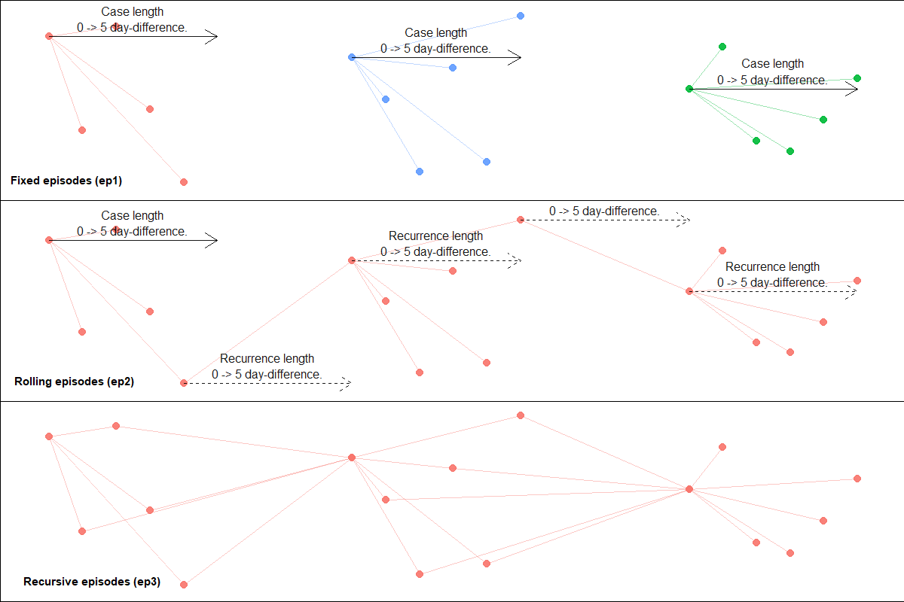
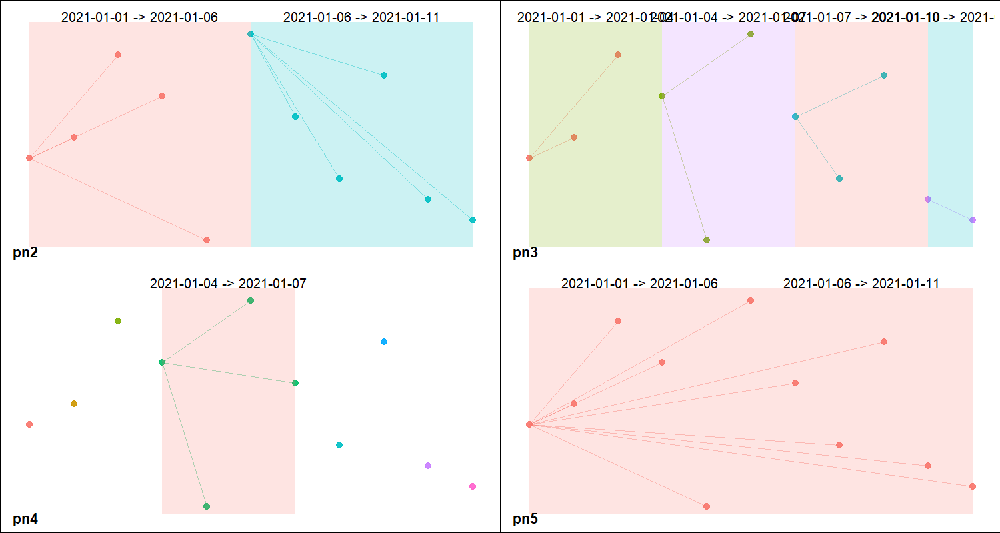

diyar is a data analytical package for linking records with shared characteristics. Linked records represent an entity, which depending on the context can range from unique patients or occurrences as defined by a case definition. Each entity is assigned to unique group with identifiers. These identifiers are stored as an S4 class with useful information about each group in their slots.
The package is capable of assessing and comparing an entity’s characteristics in several ways, making it useful in ordinarily complex analyses such as record linkage and contact or network analyses, or the application of case definitions.
The main functions are links() and link_records(), episodes() and partitions(). These functions are very flexible in terms of what and how they compare the record’s characteristics, as well as what are considered matches. Although each is best suited to certain use cases, their functionalities can sometimes overlap.
links() and link_record() - compare records without a temporal aspect to them. For example, record linkageepisodes() - compare records with a temporal aspect to them, while factoring the duration between individual records. For example, contact and network analysis.partitions() - compare records with a temporal aspect to them, without factoring the duration between individual records. For example, application of case definitions.Primarily used for multi-stage record linkage. Here, records are compared and linked based on different matching criteria over multiple stages. The priority of matches decreases with each stage, that is; a match at one stage (and thus criteria) is considered more relevant than a match at the next stage. As a result, changing the order of each stage or criteria is akin to a different linkage strategy and can lead to different outcomes. This is demonstrated below with 2-step linkages of the missing_staff_id sample dataset.
library(diyar) data(missing_staff_id) dfr_stages <- missing_staff_id[c("age", "hair_colour", "branch_office", "source_1")] # Matching `hair_colour` before matching `branch_office` dfr_stages$p1 <- links(as.list(dfr_stages[c("hair_colour", "branch_office")])) # Matching `branch_office` before matching `hair_colour` dfr_stages$p2 <- links(as.list(dfr_stages[c("branch_office", "hair_colour")])) dfr_stages #> age hair_colour branch_office source_1 p1 p2 #> 1 30 Brown Republic of Ghana A P.1 (CRI 001) P.1 (CRI 001) #> 2 30 Teal France A P.4 (CRI 002) P.2 (CRI 001) #> 3 30 <NA> <NA> A P.3 (No hits) P.3 (No hits) #> 4 30 Green <NA> B P.4 (CRI 001) P.2 (CRI 002) #> 5 30 Green France A P.4 (CRI 001) P.2 (CRI 001) #> 6 30 Dark brown Ghana A P.6 (No hits) P.6 (No hits) #> 7 30 Brown Republic of Ghana B P.1 (CRI 001) P.1 (CRI 001)
Aside from an exact_match(), user-defined comparisons are also possible using a sub_criteria object. These are S3 objects that contains an entity’s attributes and the functions to compare them. They either relax or strengthen the match criteria. See the example below.
# A function to extract the last word in a string last_word_wf <- function(x) tolower(gsub("^.* ", "", x)) # A logical test using `last_word_wf`. last_word_cmp <- function(x, y) last_word_wf(x) == last_word_wf(y) # sub_critria` objects s_cri_a <- sub_criteria(dfr_stages$hair_colour, dfr_stages$branch_office, match_funcs = c(last_word_cmp, last_word_cmp), operator = "or") s_cri_b <- sub_criteria(dfr_stages$hair_colour, dfr_stages$branch_office, match_funcs = c(last_word_cmp, last_word_cmp), operator = "and") dfr_stages$p3 <- links("place_holder", sub_criteria = list("cr1" = s_cri_a), recursive = TRUE) dfr_stages$p4 <- links("place_holder", sub_criteria = list("cr1" = s_cri_b), recursive = TRUE)
sub_criteria can be nested to achieve a nested matching criteria.
s_cri_nested_1 <- sub_criteria(s_cri_a, s_cri_b, operator = "or") s_cri_nested_2 <- sub_criteria(dfr_stages$source_1, s_cri_b, operator = "or") dfr_stages$p5 <- links(list("place_holder", dfr_stages$age), sub_criteria = list("cr1" = s_cri_nested_1, "cr2" = s_cri_nested_2))
# Results dfr_stages #> age hair_colour branch_office source_1 p1 p2 #> 1 30 Brown Republic of Ghana A P.1 (CRI 001) P.1 (CRI 001) #> 2 30 Teal France A P.4 (CRI 002) P.2 (CRI 001) #> 3 30 <NA> <NA> A P.3 (No hits) P.3 (No hits) #> 4 30 Green <NA> B P.4 (CRI 001) P.2 (CRI 002) #> 5 30 Green France A P.4 (CRI 001) P.2 (CRI 001) #> 6 30 Dark brown Ghana A P.6 (No hits) P.6 (No hits) #> 7 30 Brown Republic of Ghana B P.1 (CRI 001) P.1 (CRI 001) #> p3 p4 p5 #> 1 P.1 (CRI 001) P.1 (CRI 001) P.1 (CRI 001) #> 2 P.2 (CRI 001) P.2 (No hits) P.2 (CRI 001) #> 3 P.3 (No hits) P.3 (No hits) P.1 (CRI 002) #> 4 P.2 (CRI 001) P.4 (No hits) P.1 (CRI 002) #> 5 P.2 (CRI 001) P.5 (No hits) P.2 (CRI 001) #> 6 P.1 (CRI 001) P.1 (CRI 001) P.1 (CRI 001) #> 7 P.1 (CRI 001) P.1 (CRI 001) P.1 (CRI 001)
Is primarily used for probabilistic record linkage. Record-pairs are generated and compared for matches. Matches can be weighted to allow for imperfect matches. Match probabilities are then calculated and used to assign a match score.
dfr_5 <- missing_staff_id[c(2, 4, 5, 6)] # Using string comparators # For example, matching last word in `hair_colour` and `branch_office` last_word_wf <- function(x) tolower(gsub("^.* ", "", x)) last_word_cmp <- function(x, y) last_word_wf(x) == last_word_wf(y) p6a <- link_records(dfr_5, attr_threshold = 1, cmp_func = c(exact_match, exact_match, last_word_cmp, last_word_cmp), score_threshold = -4) # Group identifiers p6a$pid #> [1] "P.1 (CRI 001)" "P.2 (No hits)" "P.3 (No hits)" "P.4 (No hits)" #> [5] "P.5 (No hits)" "P.1 (CRI 001)" "P.1 (CRI 001)" # Weights subset(p6a$pid_weights, record.match) #> sn_x sn_y cmp.staff_id cmp.initials cmp.hair_colour cmp.branch_office #> 5 1 6 0 1 1 1 #> 6 1 7 0 1 1 1 #> 21 6 7 1 1 1 1 #> cmp.weight prb.staff_id prb.initials prb.hair_colour prb.branch_office #> 5 3 -3.358454 1.074391 4.466709 4.466709 #> 6 3 -3.358454 1.074391 1.659354 1.659354 #> 21 4 1.659354 1.074391 4.466709 4.466709 #> prb.weight record.match #> 5 6.649355 TRUE #> 6 1.034645 TRUE #> 21 11.667162 TRUE
The required number of record-pairs doubles exponentially as the size of the dataset increases. This becomes memory intensive with very large datasets. Arguments such as blocking_attribute, repeats_allowed, permutations_allowed and data_source are used to limit the amount of record-pairs created.
Also primarily used for probabilistic record linkage. links_wf_probabilistic() is a wrapper function of links() and an alternative to link_records(). It’s less memory intensive but can be slower in comparison.
p6b <- links_wf_probabilistic(dfr_5, attr_threshold = 1, cmp_func = c(exact_match, exact_match, last_word_cmp, last_word_cmp), score_threshold = -4, recursive = TRUE) # Group identifiers p6b$pid #> [1] "P.1 (CRI 001)" "P.2 (No hits)" "P.3 (No hits)" "P.4 (No hits)" #> [5] "P.5 (No hits)" "P.1 (CRI 001)" "P.1 (CRI 001)" # Weights subset(p6b$pid_weights, record.match) #> sn_x sn_y cmp.staff_id cmp.initials cmp.hair_colour cmp.branch_office #> 1 1 1 0 1 1 1 #> 6 6 1 0 1 1 1 #> 7 7 1 0 1 1 1 #> cmp.weight prb.staff_id prb.initials prb.hair_colour prb.branch_office #> 1 3 -4.321928 1.148392 1.733354 1.733354 #> 6 3 -3.836501 1.148392 4.466709 4.466709 #> 7 3 -3.836501 1.148392 1.733354 1.733354 #> prb.weight record.match #> 1 0.2931724 TRUE #> 6 6.2453079 TRUE #> 7 0.7785993 TRUE
Here, a final selection is made at each iteration. Therefore, an acceptable score_threshold is required in advance. To help with this, prob_score_range() can be used to return the range of scores attainable for a given set of attributes and, m and u-probabilities. Additionally, id_1 and id_2 can be used to compare specific records-pairs, aiding the review of potential scores.
Primarily used for contact and network analysis. episodes() is designed to compare dated records (events) and assign them to unique groups (episodes) based on the duration between events. Three type of episodes are possible; fixed, rolling and recursive episodes (Figure 1). A fixed episode is a set of events within a defined period before or after an index event. A rolling episode is a repeating series of fixed episodes linked together as recurrences. A recursive episode is a rolling episode where every event serves as an index event.
dfr_2 <- c(1:5, 10:15, 20:25) dfr_2 <- data.frame(date = as.Date("2020-01-01") + dfr_2) dfr_2$ep1 <- episodes(dfr_2$date, case_length = 5, episode_type = "fixed") dfr_2$ep2 <- episodes(dfr_2$date, case_length = 5, episode_type = "rolling") dfr_2$ep3 <- episodes(dfr_2$date, case_length = 5, episode_type = "recursive") dfr_2 #> date ep1 ep2 ep3 #> 1 2020-01-02 E.01 (C) E.1 (C) E.1 (C) #> 2 2020-01-03 E.01 (D) E.1 (D) E.1 (D) #> 3 2020-01-04 E.01 (D) E.1 (D) E.1 (D) #> 4 2020-01-05 E.01 (D) E.1 (D) E.1 (D) #> 5 2020-01-06 E.01 (D) E.1 (D) E.1 (D) #> 6 2020-01-11 E.06 (C) E.1 (R) E.1 (R) #> 7 2020-01-12 E.06 (D) E.1 (R) E.1 (R) #> 8 2020-01-13 E.06 (D) E.1 (D) E.1 (D) #> 9 2020-01-14 E.06 (D) E.1 (D) E.1 (D) #> 10 2020-01-15 E.06 (D) E.1 (D) E.1 (D) #> 11 2020-01-16 E.06 (D) E.1 (D) E.1 (D) #> 12 2020-01-21 E.12 (C) E.1 (R) E.1 (R) #> 13 2020-01-22 E.12 (D) E.1 (R) E.1 (R) #> 14 2020-01-23 E.12 (D) E.1 (D) E.1 (D) #> 15 2020-01-24 E.12 (D) E.1 (D) E.1 (D) #> 16 2020-01-25 E.12 (D) E.1 (D) E.1 (D) #> 17 2020-01-26 E.12 (D) E.1 (D) E.1 (D)
Figure 1: Episodes.

There are several options to determine which records are used as the index event, how many index events are used, how many durations from the index events are assessed, the nature of recurrences where applicable and additional matching criteria through sub_criteria objects as described above. See help(episodes) for more details about these. Also useful is episodes_wf_splits() - a wrapper function of episodes() which is better optimised for analyses with duplicate records.
partitions() assigns events to groups (panes) if they are within a defined interval (Figure 2). Unlike episodes(), the duration between events is not a factor. Here, events from the same pane simply occurred within the same interval. See the example below.
event_dt <- seq(from = as.Date("2021-01-01"), to = as.Date("2021-01-11"), by = 1) dfr_3 <- data.frame(date = event_dt) # Group events into 2 equal parts per `strata`. dfr_3$pn2 <- partitions(event_dt, length.out = 2, separate = TRUE) # Group events into 3-day sequences per `strata`. dfr_3$pn3 <- partitions(event_dt, by = 3, separate = TRUE) # Group events into a specified period of time in each `strata`. dfr_3$pn4 <- partitions(event_dt, window = number_line(event_dt[4], event_dt[7])) # Group events from separate periods into one pane. dfr_3$pn5 <- partitions(event_dt, length.out = 2, separate = FALSE)
Figure 2: Panes

There are other supporting functions which are useful for common analytical tasks. Some of these are shown below.
Produces a number_line object. This is an S4 class representing two points of an interval. It’s covered in more detail in the number_line and overlaps vignette. It’s useful when tracking episodes from periods in time as opposed to points in time. See an example of this below.
data(hospital_admissions) dfr_4 <- hospital_admissions[c("admin_dt", "discharge_dt")] dfr_4$admin_period <- number_line(dfr_4$admin_dt, dfr_4$discharge_dt) # Group overlapping hospital stays dfr_4$nl1 <- index_window(dfr_4$admin_period) dfr_4$ep4 <- episodes(date = dfr_4$admin_period, case_length = dfr_4$nl1) # Group overlapping hospital stays and those within 21 days of the end point of an index hospital stay dfr_4$nl2 <- expand_number_line(index_window(dfr_4$admin_period), 20, "right") dfr_4$ep5 <- episodes(date = dfr_4$admin_period, case_length = dfr_4$nl2)
They can also be used as an attribute in a sub_criteria object.
s_cri_c <- sub_criteria(dfr_4$admin_period, match_funcs = overlaps) dfr_4$pd5 <- links("place_holder", sub_criteria = list("cr1" = s_cri_c), recursive = TRUE) # Results dfr_4[c("admin_period", "nl1", "nl2", "ep4", "ep5", "pd5")] #> admin_period nl1 nl2 ep4 ep5 pd5 #> 1 2019-01-01 == 2019-01-01 0 == 0 0 -> 20 E.2 (D) E.2 (D) P.1 (CRI 001) #> 2 2019-01-01 -> 2019-01-10 -9 -> 0 -9 -> 20 E.2 (C) E.2 (C) P.1 (CRI 001) #> 3 2019-01-10 -> 2019-01-13 -3 -> 0 -3 -> 20 E.2 (D) E.2 (D) P.1 (CRI 001) #> 4 2019-01-05 -> 2019-01-06 -1 -> 0 -1 -> 20 E.2 (D) E.2 (D) P.1 (CRI 001) #> 5 2019-01-05 -> 2019-01-15 -10 -> 0 -10 -> 20 E.2 (D) E.2 (D) P.1 (CRI 001) #> 6 2019-01-07 -> 2019-01-15 -8 -> 0 -8 -> 20 E.2 (D) E.2 (D) P.1 (CRI 001) #> 7 2019-01-04 -> 2019-01-13 -9 -> 0 -9 -> 20 E.2 (D) E.2 (D) P.1 (CRI 001) #> 8 2019-01-20 -> 2019-01-30 -10 -> 0 -10 -> 20 E.8 (C) E.2 (D) P.9 (CRI 001) #> 9 2019-01-26 -> 2019-01-31 -5 -> 0 -5 -> 20 E.8 (D) E.2 (D) P.9 (CRI 001) #> 10 2019-01-01 -> 2019-01-10 -9 -> 0 -9 -> 20 E.2 (D) E.2 (D) P.1 (CRI 001) #> 11 2019-01-20 -> 2019-01-30 -10 -> 0 -10 -> 20 E.8 (D) E.2 (D) P.9 (CRI 001)
make_pairs() creates record pairs.
prs_1 <- make_pairs(LETTERS[1:4], repeats_allowed = FALSE, permutations_allowed = FALSE) prs_2 <- make_pairs(LETTERS[1:4], repeats_allowed = TRUE, permutations_allowed = TRUE) prs_3 <- make_pairs(1:5000, repeats_allowed = TRUE, permutations_allowed = TRUE) str(prs_1) #> List of 4 #> $ x_pos: int [1:6] 1 1 1 2 2 3 #> $ y_pos: int [1:6] 2 3 4 3 4 4 #> $ x_val: chr [1:6] "A" "A" "A" "B" ... #> $ y_val: chr [1:6] "B" "C" "D" "C" ... str(prs_2) #> List of 4 #> $ x_pos: int [1:16] 1 1 1 1 2 2 2 2 3 3 ... #> $ y_pos: int [1:16] 1 2 3 4 1 2 3 4 1 2 ... #> $ x_val: chr [1:16] "A" "A" "A" "A" ... #> $ y_val: chr [1:16] "A" "B" "C" "D" ... str(prs_3) #> List of 4 #> $ x_pos: int [1:25000000] 1 1 1 1 1 1 1 1 1 1 ... #> $ y_pos: int [1:25000000] 1 2 3 4 5 6 7 8 9 10 ... #> $ x_val: int [1:25000000] 1 1 1 1 1 1 1 1 1 1 ... #> $ y_val: int [1:25000000] 1 2 3 4 5 6 7 8 9 10 ...
combi() creates numeric codes for unique combination of vectors. This aims to be a faster alternative to paste0 when it’s more relevant to know a unique combination instead of the exact combination.
cmbi_dfr <- dfr_stages[c(1, 2)] cmbi_dfr$combi_nm <- paste(cmbi_dfr[[1]], cmbi_dfr[[2]]) cmbi_dfr$combi_cd <- combi(as.list(cmbi_dfr)) cmbi_dfr #> age hair_colour combi_nm combi_cd #> 1 30 Brown 30 Brown 1 #> 2 30 Teal 30 Teal 2 #> 3 30 <NA> 30 NA 3 #> 4 30 Green 30 Green 4 #> 5 30 Green 30 Green 4 #> 6 30 Dark brown 30 Dark brown 5 #> 7 30 Brown 30 Brown 1
episodes() and links() are iterative functions. Although both continue to be optimised, each iteration costs additional processing time. The main way to mitigate this is to reduce the number of iterations required to complete an analysis. To help with this, both functions have arguments which ensure that only the minimum number of records required to complete the process is used.
The flexibility of episodes() and links() results in situations where the use of different arguments will lead to the same outcome. However, one combination will usually require fewer iterations to complete the same process. Therefore, a good grasp of the role of each argument is useful in knowing the most efficient combination of arguments to use.
In some analyses, episodes() and links() can be used interchangeably however, one is usually less efficient in each situation. For example, identifiers dfr_4$ep4 and dfr_4$pd5 are essentially the same outcome; 2 groups with the same set of records in each. However, we can see below that episodes() created dfr_4$ep4 in 2 iterations compared to the 7 iterations it took links() to create dfr_4$ep4.
summary(dfr_4$ep4) #> Iterations: 2 #> Total records: 11 #> by record type: #> Case: 2 #> Duplicate_C: 9 #> Total episodes: 2 #> by episode type: #> Fixed: 2 #> by episode dataset: #> N/A #> by episodes duration: #> N/A #> by records per episode: #> 3 records: 1 #> 8 records: 1 #> by recurrence: #> N/A summary(dfr_4$pd5) #> Iterations: 7 #> Total records: 11 #> by matching criteria: #> Criteria 1: 11 #> Total record groups: 2 #> by group dataset: #> N/A #> by records per group: #> 3 records: 1 #> 8 records: 1
It’s also worth noting that using a sub_criteria can cost a lot in processing time. Therefore, it should not be used if it can be avoided. For example, dfr_stages$p4 was created using sub_cri_b which took 6 iterations. However, the same outcome can be achieved in 1 iteration with a criteria. See the difference below.
dfr_stages$p4b <- links(criteria = combi(last_word_wf(dfr_stages$hair_colour), last_word_wf(dfr_stages$branch_office))) summary(dfr_stages$p4b) #> Iterations: 1 #> Total records: 7 #> by matching criteria: #> Criteria 1: 3 #> No hits: 4 #> Total record groups: 5 #> by group dataset: #> N/A #> by records per group: #> 1 record: 4 #> 3 records: 1 all(dfr_stages$p4 == dfr_stages$p4b) #> [1] TRUE
The time differences from these different iterations are negligible when dealing with relatively small datasets but become more apparent as the size increases.